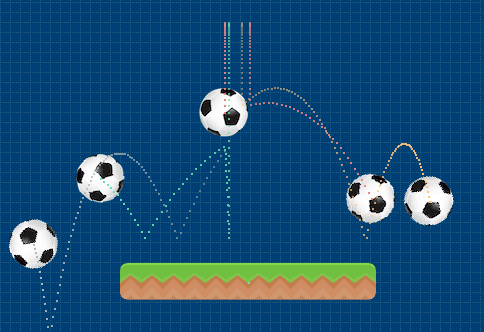

Manejo de tiempo
Pilas ofrece varias formas de ejecutar funciones cada determinado tiempo. Esto es útil para crear enemigos, crear relojes para hacer más desafiante un juego o incluso para aumentar la dificultad de un juego.
Funciones manejar el tiempo
Hay dos funciones principales en el temporizador de pilas:
pilas.luego(cantidad_de_segundos_a_esperar, función)pilas.cada(segundos_para_el_intervalo, función, veces_a_repetir: opcional)
La primer función permite ejecutar una función luego de un periodo de tiempo. Por ejemplo, si queremos hacer que un actor diga algo luego de 3 segundos podemos hacerlo así:
let mi_actor = pilas.actores.aceituna();
pilas.luego(3, () => {
mi_actor.decir("¡Han pasado 3 segundos!");
});Hay que tener en cuenta que esta función se ejecutará una sola vez.
La segunda función, llamada pilas.cada, permite invocar una función cada determinada cantidad de segundos, muy similar a la anterior, pero invoca la función que le pidamos varias veces.
Por ejemplo, imagina que queremos crear actores pelota cada medio segundo, podemos hacer algo así:
pilas.cada(0.5, () => {
var pelota = pilas.actores.pelota();
pelota.y = 100;
pelota.x = pilas.azar(-200, 200);
});Si ejecutas esas instrucciones, vas a ver en pantalla algo así. Cada medio segundo se creará un actor pelota en una posición diferente:

Cancelar repeticiones o eliminar temporizadores
Si utilizas la función pilas.cada para repetir una acción varias veces, es
probable que ante una determinada condición quieras dejas de repetir
la ejecución de la función.
Una forma de lograr esto es diciéndole a pilas cuantas veces tiene que repetir la función, por ejemplo, para llamar 5 veces una función cada dos segundos deberías llamar a la función así:
var actor = pilas.actores.aceituna();
pilas.cada(
2,
() => {
actor.decir("prueba");
},
5
);Otra opción, es detener el temporizador directamente desde la función
retornando true:
Por ejemplo, imagina que tienes un actor que se mueve 50 pixeles a la derecha cada 2 segundos, pero que quieres que deje de moverse cuando llegue a la posición x igual a 200. Podrías implementarlo de esta forma:
var actor = pilas.actores.aceituna();
pilas.cada(2, () => {
actor.x += 50;
if (actor.x > 200) {
// retornar este valor 'true' hace que la función deje de llamarse cada
// dos segundos.
return true;
}
});Métodos especiales
También existe un método llamado cada_segundo que los actores pueden utilizar
para disparar una acción cada vez que transcurre un segundo en el juego. Por
ejemplo, si queremos crear un actor que aumente su tamaño cada un segundo
podemos definir el método así:
class caja extends Actor {
cada_segundo() {
this.escala += 0.5;
}
}O bien, si ya tenemos la referencia al actor también sería válido escribir algo así:
var mi_actor = pilas.obtener_actor_por_nombre("caja");
mi_actor.cada_segundo = () => {
mi_actor.escala += 0.5;
mi_actor.decir("¡pasó un segundo!");
}